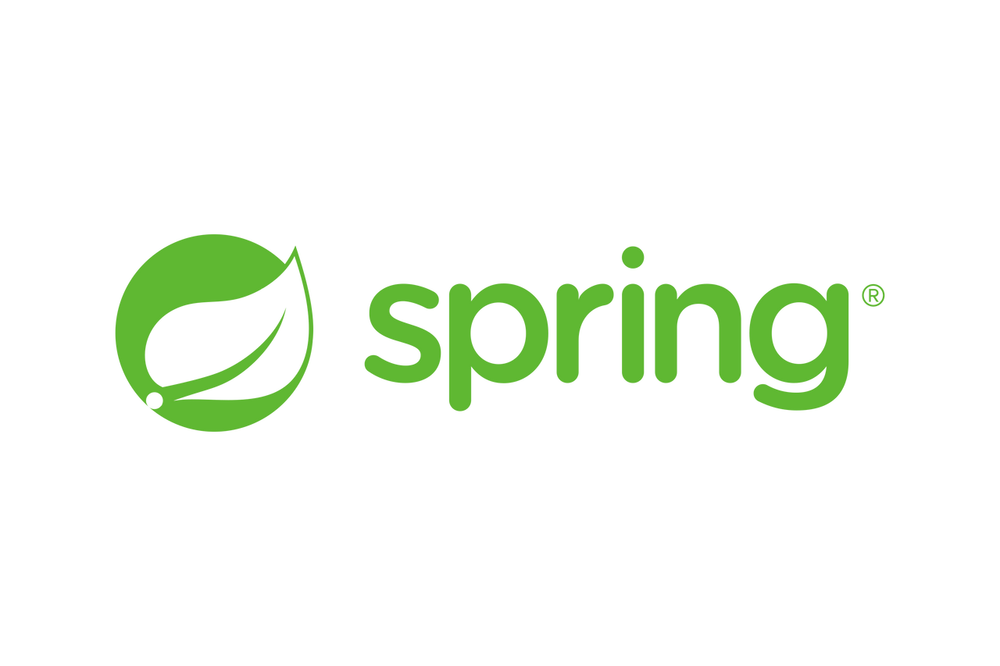
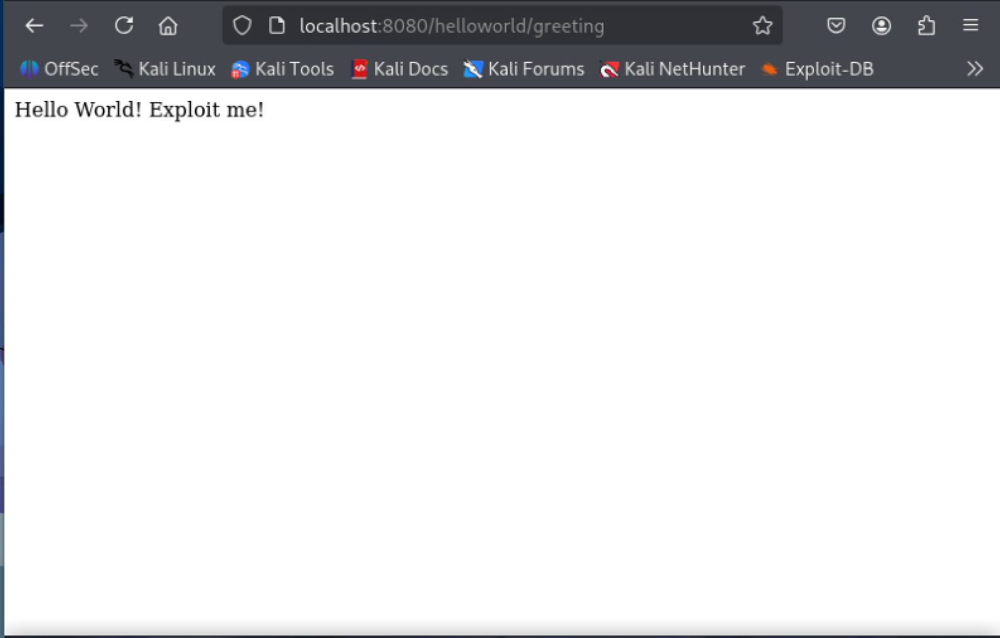

이번 주차에는 분석하고자 하는 취약점을 선정하고
취약점을 분석하기 위한 사전 준비 작업을 진행하였다.
Spring4Shell (CVE-2022-22965)
Spring4Shell 취약점은 Spring Framework 에서 사용할 수 있는 취약점으로,
특정 조건의 웹 애플리케이션에 원격코드실행(RCE) 공격을 가능하게 한다.
※ Spring Framework 5.3.18.5.2.20 패치로 조치가 완료되었다.
Spring4Shell 을 사용하기 위한 조건은 다음과 같다.
| Java | JDK 9+ |
| Spring Framework | 5.3.0 ~ 5.3.17 과 5.2.0 ~ 5.2.19 및 이전 버전 |
Spring Framework
Spring4Shell 이 Spring Framework 에서 사용되기 때문에
Spring Framework 에 대해서 알아보자.

Spring Framework 는 Java 플랫폼을 위한 오픈소스 애플리케이션 Framework 로,
엔터프라이즈급 애플리케이션을 개발하기 위한 모든 기능을 종합적으로 제공하는 경량화 솔루션이다.
Spring Framework 를 사용하여 개발자는 애플리케이션을 보다 쉽게 개발할 수 있다.
PoC 환경 구축
Spring4Shell 을 분석하기 위해서 PoC 환경 구축을 진행하겠다.
나는 깃허브에서 찾은 PoC 파일을 사용하여 구축을 하고자 한다.
https://github.com/reznok/Spring4Shell-POC
GitHub - reznok/Spring4Shell-POC: Dockerized Spring4Shell (CVE-2022-22965) PoC application and exploit
Dockerized Spring4Shell (CVE-2022-22965) PoC application and exploit - reznok/Spring4Shell-POC
github.com
가상 머신에 있는 스냅샷, 복구 기능이 분석을 하는데 편리할 것 같아
가상 머신에서 칼리 리눅스를 사용하여 분석을 하려 한다.
git clone 을 사용하여 리포지토리를 복사한다.
git clone https://github.com/reznok/Spring4Shell-POC.git그 후 깃허브 사이트에 있는 명령어를 사용하여 도커로 환경을 구축한다.
sudo docker build . -t spring4shell && docker run -p 8080:8080 spring4shell만약 칼리 리눅스에 도커가 설치되어 있지 않았다면,
다음에 명령어를 사용하여 설치하면 된다.
sudo apt install docker.io구축이 다 되었다면 http://localhost:8080/helloworld/greeting 을 입력하면 다음과 같은 창이 나온다.

이제 이 사이트에서 Spring4Shell 을 재현하고 분석할 것이다.
자세한 재현과 분석은 4주차에서 진행할 것이다.
후기
이번에 여러 자료를 조사하면서 많은 사람들이 1day 취약점을 분석했다는 것을 알았다.
그만큼 취약점 분석을 통해서 많은 것을 배울 수 있다고 생각한다.
그렇기 때문에 이번 분석을 통해서 취약점을 이해하고
취약점을 패치하기 위한 방법을 배울 것이다.